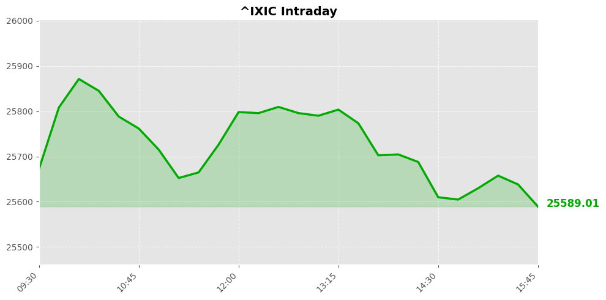
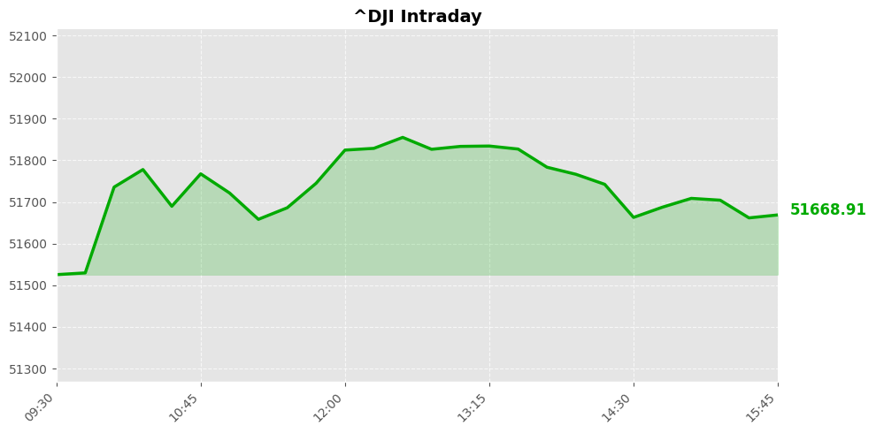
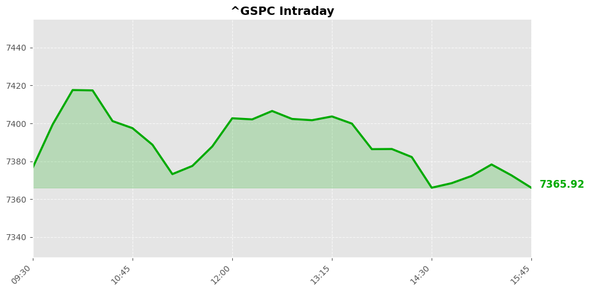

美股市场简报
2026年06月24日 | StockGate 美股通
📊 市场概览
纳斯达克指数 25587.04 ▼ -579.56 (-2.21%)

道琼斯指数 51666.84 ▼ -45.87 (-0.09%)

标普500指数 7365.46 ▼ -107.33 (-1.44%)

隔夜美股收盘呈现明显的科技股领跌格局，纳斯达克指数大幅下挫2.21%，跌破25600点关口，遭遇近期较为沉重的技术性回调。相比之下，道琼斯指数仅微跌0.09%，显示出明显的防御性轮动特征，资金从成长板块向价值板块转移的迹象十分明显。标普500指数下跌1.44%，收于7365点附近，整体市场承压较为显著。导致这一局面的主要原因可能包括市场对前期科技股涨幅过大的获利了结、对利率预期的重新定价以及部分避险情绪升温。纳指跌幅远超道指，反映出投资者正在主动降低高估值科技股的仓位，转向更具防御性的蓝筹品种。短期来看，市场仍需消化获利盘抛压，科技板块能否在关键支撑位企稳将决定后续走势方向，建议密切关注波动率指数变化及资金流向，警惕短期震荡整理风险。
📰 今日要闻
美国商品期货交易委员会对肯塔基州提起诉讼，挑战该州对预测市场的监管立场，这是联邦监管机构首次对红州采取法律行动，凸显了事件合约监管权的争夺日益激烈。
美国参议院投票决定停止伊朗战争，这是对特朗普总统的最新民调打击，同时路透益普索民调显示，很少有美国人认为伊朗战争是值得的，特朗普支持率创下任期新低，政治不确定性显著上升。
以色列在黎巴嫩开火导致两人死亡，考验着与伊朗相关的停火协议，中东地缘政治紧张局势持续发酵，市场避险情绪可能进一步升温。
杜邦公司宣布1比3的反向股票分割计划，这将影响投资者持股结构和流动性，公司层面的重大重组行动值得持续关注。
工业巨头分拆催化剂临近，华尔街分析师建议在市场回调中加仓，认为市场表现比开盘时更具建设性，这为工业板块带来积极信号。
巴基斯坦在伊朗战争中的和平维护角色可能为其带来经济红利，地缘政治中的中立立场或创造新的投资机遇。
PGA巡回赛宣布全面改革以提升竞争水平和奖金，体育商业模式的变革可能影响相关产业链估值。
总体而言，今日市场核心关注点集中在伊朗地缘政治走向、特朗普政治风险、预测市场监管、工业巨头分拆以及市场回调中的投资机会。
📈 宏观经济数据
💰 利率与货币政策
联邦基金利率： 3.6% -0.0个百分点 （前值: 3.6%）
观察日期: 2026-05-01 | 下次公布: 2026-07-29
10年期国债收益率： 4.5% （前值: .）
观察日期: 2026-06-22 | 下次公布: 2026-06-24
🔥 通胀指标
消费者物价指数(CPI)： 4.2% +0.4个百分点 （前值: 3.8%）
观察日期: 2026-05-01 | 下次公布: 2026-07-14
PCE物价指数： 3.8% +0.2个百分点 （前值: 3.5%）
观察日期: 2026-04-01 | 下次公布: 2026-06-25
核心PCE物价指数： 3.3% +0.1个百分点 （前值: 3.2%）
观察日期: 2026-04-01 | 下次公布: 2026-06-25
生产者物价指数(PPI)： 6.4% +0.8个百分点 （前值: 5.7%）
观察日期: 2026-05-01 | 下次公布: 2026-07-15
👷 就业指标
非农就业人数变化： 159001.0K +172.0K （前值: 158829.0K）
观察日期: 2026-05-01 | 下次公布: 2026-07-03
失业率： 4.3% 0.0个百分点 （前值: 4.3%）
观察日期: 2026-05-01 | 下次公布: 2026-07-03
🛒 消费者指标
零售销售月度变化： 0.9% +0.5个百分点 （前值: 0.4%）
观察日期: 2026-05-01 | 下次公布: 2026-07-16
个人消费支出月度变化： 0.5% -0.5个百分点 （前值: 1.0%）
观察日期: 2026-04-01 | 下次公布: 2026-06-25
🔥 社区热股
SPCX $156.11 +0.98% 🔥 55次提及
MU $1051.77 -13.18% 🔥 45次提及
SPY $733.58 -1.45% 🔥 18次提及
MSFT $373.94 +1.8% 🔥 15次提及
NVDA $200.04 -4.13% 🔥 12次提及
SNDK $1963.6 -13.64% 🔥 12次提及
META $562.2 -0.29% 🔥 10次提及
QQQ $713.65 -3.29% 🔥 10次提及
DRAM $69.22 -14.25% 🔥 10次提及
GOOG $346.08 -0.77% 🔥 8次提及
TSLA $381.61 -5.79% 🔥 8次提及
TTWO $242.64 +1.28% 🔥 8次提及
CBRS $226.72 +1.02% 🔥 8次提及
GOOGL $346.13 -1.02% 🔥 6次提及
PLTR $116.7 -2.34% 🔥 6次提及
RKLB $95.12 -5.16% 🔥 6次提及
NBIS $275.25 -2.95% 🔥 6次提及
NOW $95.94 +3.15% 🔥 6次提及
AAPL $294.3 -0.91% 🔥 5次提及
AMD $519.85 -5.76% 🔥 4次提及
🔮 市场展望
在经历前一交易日的大幅回调后，美股市场预计将在未来一到两个交易日内呈现震荡整理的格局。纳斯达克指数跌幅超过2%，科技股承压明显，而道琼斯指数相对抗跌，显示资金在大盘蓝筹与成长股之间出现分化。短期内，市场情绪需要时间消化前期的抛压，投资者趋于谨慎，指数可能在低位反复拉锯，等待新的催化剂出现。
地缘政治方面，美国参议院投票叫停对伊军事行动，这一消息对市场而言属于利好因素，有助于缓解地缘紧张带来的不确定性，降低避险情绪对市场的压制。然而，特朗普支持率跌至任期低点，政治层面的不稳定性仍然是潜在的风险因素，可能在未来政策走向上引发更多波动。
投资者需要重点关注几个方面。首先，科技板块的回调幅度较大，需观察纳斯达克能否在关键支撑位企稳，若继续下破则可能引发更广泛的风险传导。其次，市场正在重新评估地缘政治溢价的变化，原油和避险资产的价格走势值得跟踪。最后，即将公布的经济数据和美联储政策预期仍是决定中期方向的核心变量，任何超预期的通胀或就业数据都可能打破当前的震荡格局，推动市场选择新的方向。整体建议以观望为主，控制仓位，等待市场企稳信号明确后再做进一步布局。
数据来源：Yahoo Finance / Finnhub / Alpha Vantage / FRED / Reddit
报告生成：2026-06-24 06:08
⚠️ 免责声明：美股市场简报 - 2026年06月24日。StockGate 美股通 - 本报告仅供参考，不构成投资建议。投资有风险，入市需谨慎。
🔥 扫码加入【股神星】专属群 🔥
扫码加入股神星交流群，一起享受财富人生
📱 下载飞书App，扫描二维码入群
获取更多美股投资洞察与实时动态